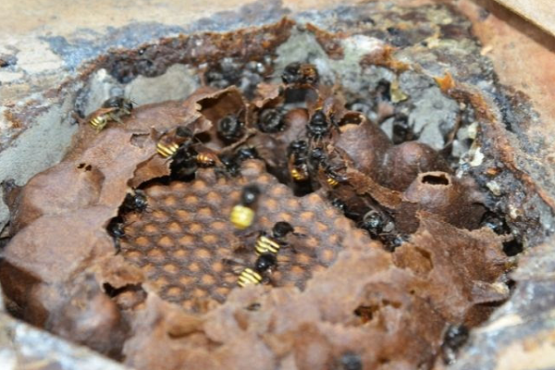
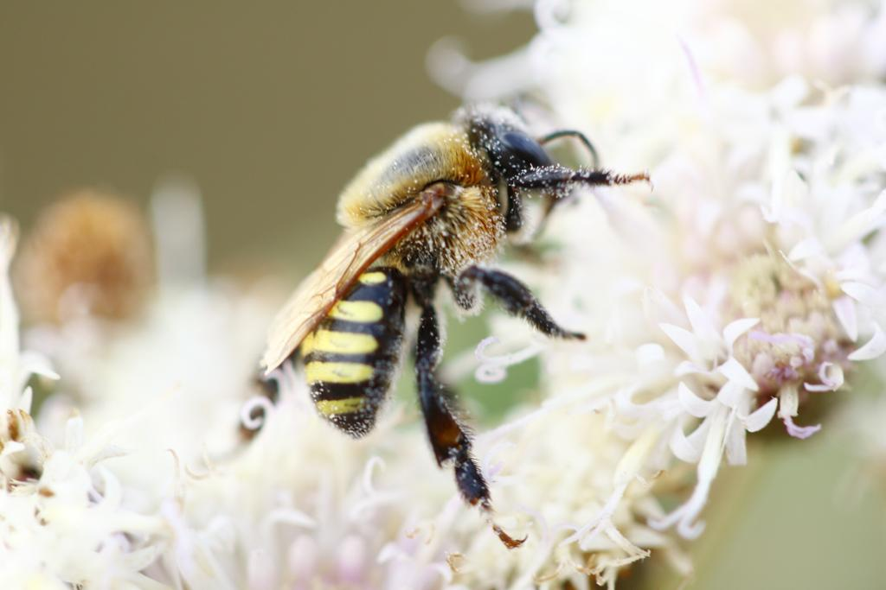

Características Gerais e Hábitos
Arquitetas e Guardiãs:
As abelhas mandaçaia constroem colmeias em locais seguros, como cavidades de árvores, e protegem-nas com uma mistura de cera e resina.
Elas também utilizam própolis, um produto retirado de plantas, para evitar predadores e microrganismos.
Em caso de ameaças, podem liberar feromônios de alerta, atraindo outras abelhas para se defenderem em grupo.

Operárias e Polinizadoras:
As operárias da mandaçaia trabalham incansavelmente, coletando néctar, pólen e resina para alimentar a colmeia e construir o ninho.
Durante suas visitas às flores, polinizam diversas plantas, assegurando a produção de frutos.

Mel Especial:
Produzem um mel de alta qualidade, com um sabor característico e propriedades medicinais, amplamente utilizado em produtos alimentícios e terapêuticos.
Importância Ecológica:
Essas abelhas são essenciais para o equilíbrio ambiental, polinizando uma variedade de plantas e contribuindo para a biodiversidade.
A meliponicultura, que envolve a criação de mandaçaias, ajuda a conservar a espécie, gera renda e educa sobre a importância das abelhas no ecossistema.